콘크리트산업기사 (2019-04-27 기출문제)
1과목: 콘크리트재료 및 배합
1. 콘크리트의 배합에 있어서 물-결합재비를 낮게 하였을 경우에 관한 설명으로 옳지 않은 것은?
- 수밀성은 증가한다.
- 압축강도는 증가한다.
- 내마모성은 증가한다.
- 탄산화에 대한 저항성은 감소한다.
(정답률: 69%)

2. 각종 골재에 대한 설명으로 틀린 것은?
- 콘크리트용 부순 골재는 일반 콘크리트용 골재와는 달리 입자 모양 판정 실적률을 검토하여야 한다.
- 인공경량 골재를 사용한 콘크리트의 경우 하천 골재를 사용한 경구보다 압축강도는 떨어지지만 동결융해 저항성은 향상된다.
- 부순 잔골재의 경우 다량의 미분말을 함유하는 경우가 많아 콘크리트의 성능에 영향을 미치기 때문에 미립분 함유량을 검토할 필요가 있다.
- 고로 슬래그 잔골재는 고온 하에서 장기간 저장해 두면 굳어질 우려가 있는 때문에 동결 방지제를 살포함과 동시에 가능 한 1개월 이내에 사용하는 것이 좋다.
(정답률: 74%)
3. 굵은 골재의 유해물 함유량의 한도에 대한 설명 중 틀린 것은?
- 순환골재의 점토덩어리 함유량은 1.0% 이하이어야 한다.
- 교통량이 많은 슬래브의 연한 석편 함유량은 5.0% 이하이어야 한다.
- 점토덩어리와 연한석편의 함유량 합은 5.0%이하이어야 한다.
- 0.08mm 체 통과향의 시험을 실시한 후 체에 남은 점토덩어리는 0.25% 이하이어야 한다.
(정답률: 44%)
4. 해양 콘크리트 중 물보라, 간만대 지역의 일반 현장 시공의 경우 초과하지 않아야 할 최대 물-결합재배(%)는?
- 40%
- 45%
- 50%
- 55%
(정답률: 35%)
5. 레디믹스트 콘크리트의 혼합에 사용되는 물 중 상수돗물 이외의 물의 품질에 관한 설명으로 옳지 않은 것은?
- 염소이온(Cl-)양은 250mg/L 이하이어야 한다.
- 현탁 물질과 용해성 증발 잔류물은 1g/L이하로 관리하여야 한다.
- 모르타르의 압축강도 비는 재령 7일 및 28일에서 90% 이상 나와야 한다.
- 시멘트 응결 시간의 차이가 초결은 30분 이내, 종결은 60분 이내이어야 한다.
(정답률: 58%)
6. 콘크리트용 골재로서 요구되는 성질로 적합하지 않은 것은?
- 잔골재는 유기 불순물 시험에 합격한 것
- 골재의 입형은 편평하고 긴 모양을 가질 것
- 잔골재의 염화물(NaCl 환산량) 허용한도는 0.04% 이하일 것
- 골재의 강도는 콘크리트 중 경화시멘트 페이스트의 강도 이상일 것
(정답률: 84%)
7. 콘크리트의 배합에 대한 일반사항을 설명한 것으로 틀린 것은?
- 물-결합재비는 소요의 강도, 내구성, 수밀성 및 균열저항성 들을 고려하여 정한다.
- 단위수량은 작업에 적합한 워커빌리티를 갖는 범위 내에서 될 수 있는 대로 적게 한다.
- 현장 콘크리트의 품질변동을 고려하여 콘크리트의 배합강도는 설계기중강도보다 작게 정한다.
- 잔골재율은 소요의 워커빌리티를 얻을수 있는 범위 내에서 댠위수량이 최소가 되도록 시험에 의해 정한다.
(정답률: 78%)
8. 철근콘크리트에 이용되는 길이가 300mm, 지름이 20mm인 강봉에 50kN의 인장력을 가한 결과 2.34x10-1mm가 신장되었을 때 강봉의 변형률은? (단, 강봉의 탄성 계수=2.04×105N/mm2)
- 6.2×10-4
- 6.8×10-4
- 7.2×10-4
- 7.8×10-4
(정답률: 39%)
9. 공기 투과 장치를 이용한 분말도 시험방법에 따라 보통 포틀랜드 시멘트의 분말도를 측정하여 다음과 같은 시험 결과를 얻었을 때 보통 포틀랜드 시멘트의 비표 면적은?
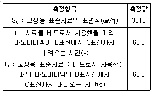
- 3304.27cm2/g
- 3454.65cm2/g
- 3519.64cm2/g
- 3557.38cm2/g
(정답률: 39%)
10. 콘크리트용 실리카 퓸의 품질규정으로 부적잘한 것은?
- 슬러리형 실리카 퓸의 강열 감량 측정시 가열 온도는 1⑤±5℃로 한다.
- 분말상 및 과립상인 실리카 퓸의 이산화 규소 함량은 85% 이상이어야 한다.
- 제품 형태별로 분말상인 실리카 퓸의 단위질량은 450kg/m3 이하이어야 한다.
- 제품 형태별로 과립상인 실리카 퓸의 단위질량은 700kg/m3 이하이어야 한다.
(정답률: 43%)
11. 콘크리트의 배합강도를 결정할 때 사용 하는 압축강도의 표준편차는 30회 이상의 시험실적으로부터 구하는 것을 원칙으로 하며, 그 이하일 경우 보정계수를 곱하여 그 값을 표준편차로 사용한다. 다음 중 시험횟수가 20회일 때 표준편차의 표정계수로 옳은 것은?
- 1.03
- 1.08
- 1.16
- 1.24
(정답률: 68%)
12. 콘크리트 배합설계에서 단위골재량의 절대 용적을 계산하는 데 반드시 필요한 항목이 아닌 것은?
- 공기량
- 단위수량
- 시멘트의 밀도
- 굵은 골재의 최대 치수
(정답률: 66%)
13. 다음 재료를 계량할 때 허용되는 오차값으로 옳은 것은?
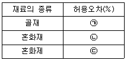
- ㉠:±3, ㉡:±2, ㉢:±3
- ㉠:±1, ㉡:±2, ㉢:±3
- ㉠:±3, ㉡:±2, ㉢:±1
- ㉠:±2, ㉡:±3, ㉢:±2
(정답률: 75%)
14. 잔골재의 밀도 및 흡수율시험에서 결과의 정밀도에 대한 설명으로 옳은 것은?
- 시험값은 평균과의 차이가 밀도의 경우 0.1g/cm3 이하, 흡수율의 경우는 0.5%이하이어야 한다.
- 시험값은 평균과의 차이가 밀도의 경우 0.5g/cm3 이하, 흡수율의 경우는 0.1%이하이어야 한다.
- 시험값은 평균과의 차이가 밀도의 경우 0.⑤g/cm3 이하, 흡수율의 경우는 0.01%이하이어야 한다.
- 시험값은 평균과의 차이가 밀도의 경우 0.01g/cm3 이하, 흡수율의 경우는 0.⑤%이하이어야 한다.
(정답률: 57%)
15. 굵은 골재에 관한 시험을 통해 아래와 같은 결과를 얻었다. 이 골재의 흡수율은?
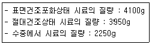
- 3.48%
- 3.52%
- 3.80%
- 3.91%
(정답률: 68%)
16. 시멘트의 비중이 작아지는 경우에 대한 설명으로 틀린 것은?
- 시멘트가 풍화한 경우
- 시멘트의 저장기간이 짧은 경우
- 시멘트에 혼합물이 섞여 있는 경우
- 시멘트의 클링커의 소성이 불충분한 경우
(정답률: 80%)
17. 포틀랜드 시멘트의 성질에 대한 설명으로 옳지 않은 것은?
- 시멘트의 비표면적이 클수록 초기강도는 작다.
- 혼합시멘트의 비중은 혼합재의 종류에 따라서 다를 수 있다.
- 강도발현성이 좋을수록 초기재령에서 시멘트의 수화열은 크다.
- 온도가 높을수록 응결이 빠르며, 풍화가 진행될수록 응결이 낮다.
(정답률: 68%)
18. 다음의 표는 콘크리트용 골재의 체가름 시험결과를 나타낸 것이다. 이 골재의 조립률로 옳은 것은?
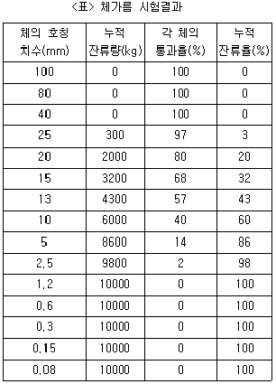
- 6.58
- 6.64
- 6.98
- 8.42
(정답률: 53%)
19. 플라이 애시의 품질규격에서 물리적 성질의 항목이 아닌 것은?
- 밀도(g/cm3)
- 강열 감량(%)
- 분말도(cm2/g)
- 활성도 지수(%)
(정답률: 63%)
20. 다음 포틀랜드 시멘트 중 C3A 함량이 가장 적은 것은?
- 보통 포틀랜드 시멘트
- 조강 포틀랜드 시멘트
- 중용열 포틀랜드 시멘트
- 초조강 포틀랜드 시멘트
(정답률: 57%)
2과목: 콘크리트제조, 시험 및 품질관리
21. 일반 콘크리트의 받아들이기 품질검사에서 염소이온량은 원칙적으로 몇 kg/m3 이하이어야 하는가?
- 0.1kg/m3
- 0.2kg/m3
- 0.3kg/m3
- 0.4kg/m3
(정답률: 66%)
22. 콘크리트 압축강도 시험에서 지름 150mm, 높이 300mm인 원주형 공시체를 사용한 경우, 최대 압축하중 430kN에서 공시체가 파괴되었다면 압축강도는?
- 24.3MPa
- 26.5MPa
- 28.1MPa
- 30.4MPa
(정답률: 57%)
23. 강도 시험용 공시체 제작에 대한 설명으로 틀린 것은?
- 공시체의 양생 온도는 (20±2)℃로 한다.
- 쪼갬 인장 강도 시험용 공시체는 원기둥 모양으로 그 지름은 굵은 골재의 최대치수의 4배 이상이며 150mm 이상으로 한다.
- 캐핑용 재료를 사용하여 압축강도 시험용 공시체를 캐핑하는 경우 캐핑층의 두께는 공시체 지름이 5% 정도로 한다.
- 캐핑용 재료를 사용하여 압축강도 시험용 공시체를 캐핑하는 경우 캐핑층의 압축강도는 콘크리트의 예상되는 강도보다 작아서는 안 된다.
(정답률: 47%)
24. 콘크리트 비비기는 미리 정해둔 비비기 시간의 몇 배 이상 계속해서는 안 되는가?
- 2배
- 3배
- 4배
- 5배
(정답률: 74%)
25. 레디믹스트 콘크리트의 품질 기준 중 고강도 콘크리트의 공기량 및 공기량의 허용 오차로 옳은 것은?
- 공기량:5.5%, 허용 오차:±1.5%
- 공기량:5.5%, 허용 오차:±2%
- 공기량:3.5%, 허용 오차:±2%
- 공기량:3.5%, 허용 오차:±1.5%
(정답률: 67%)
26. 콘크리트의 크리프에 영향을 미치는 요소에 대한 설명으로 틀린 것은?
- 습도가 높을수록 크리프가 크다.
- 재하응력이 클수록 크리프가 크다.
- 부재의 치수가 작을수록 크리프가 크다.
- 물-결합재비가 높을수록 크리프가 크다.
(정답률: 43%)
27. 시멘트의 저장에 대한 일반적인 설명으로 틀린 것은?
- 저장 중에 약간이라도 굳은 시멘트는 공사에 사용하지 않아야 한다.
- 시멘트는 방습적인 구조로 된 사일로 또는 창고에 품종별로 구분하여 저장하여야 한다.
- 포대시멘트로서 저장기간이 길어질 우려가 있는 경우에는 13포대 이상 쌓아 올리지 않는 것이 좋다.
- 시멘트의 온도가 너무 높을 때는 그 온도를 낮춘 다름 사용하여야 하며, 시멘트의 온도는 일반적으로 50℃ 이하를 사용하는 것이 좋다.
(정답률: 60%)
28. 모르타르 및 콘크리트의 길이변화 시험(KS F 2424)에서 규정하는 시험방법이 아닌 것은?
- 콤퍼레이터 방법
- 크랙 게이지 방법
- 다이얼 게이지 방법
- 콘택트 게이지 방법
(정답률: 54%)
29. 다음 중 콘크리트 타설 후부터 응결이 종료할 때까지 발생하는 균열이 원인이 아닌 것은?
- 하중에 의한 휨 균열
- 콘크리트의 침하에 의한 균열
- 시멘트의 이상응결에 의한 균열
- 잔골재에 함유된 미립분에 의한 균열
(정답률: 65%)
30. 콘크리트의 동해 및 내동해성에 관한 설명 중 잘못된 것은?
- 흡수율이 큰 골재를 사용하면 동해를 일으키기 쉽다.
- AE제를 사용하면 내동해성을 향상시키는데 큰 효과가 있다.
- 물-결합재비가 큰 콘크리트를 사용하면 동해를 작게 할 수 있다.
- 건습 반복을 받는 부재가 건조상태로 유지되는 부재에 비해 동해를 일으키기 쉽다.
(정답률: 71%)
31. 지름 150mm, 높이 300mm인 원주형 공시체의 인장 강도를 측정하기 위해 쪼갬 인장 강도 시험으로 콘크리트에 하중을 가하여 공시체가 100kN에 파괴되었다면, 이 콘크리트의 쪼갬 인장 강도는?
- 1.4MPa
- 1.7MPa
- 2.0MPa
- 2.3MPa
(정답률: 73%)
32. 레디믹스크 콘크리트(KS F 4009)의 품질 중 슬럼프가 80mm일 때 슬럼프의 허용오차로 옳은 것은?
- ±10mm
- ±15mm
- ±20mm
- ±25mm
(정답률: 63%)
33. 콘크리트의 슬럼프 시험에 대한 설명으로 틀린 것은?
- 슬럼프콘을 들어 올리는 시간은 높이 300mm에서 10~15초로 한다.
- 슬럼프콘은 윗면의 안지름 100mm, 밑면의 안지름 200mm, 높이 300mm 및 두께 1.5mm 이상인 금속제를 사용한다.
- 슬럼프콘에 콘크리트를 채우기 시작하고나서 슬럼프콘의 들어 올리기를 종료할 때까지의 시간은 3분 이내로 한다.
- 슬럼프콘에 시료를 넣고 봉다짐할 때 분리를 일으킬 염려가 있을 때는 분리를 일으키지않을 정도로 다짐수를 줄인다.
(정답률: 67%)
34. 다음 중 품질관리 4단계 사이클의 순서가 옳은 것은?
- 계획→검토→조치→실시
- 계획→실시→검토→조치
- 검토→실시→계획→조치
- 검토→계획→실시→조치
(정답률: 72%)
35. 5회의 압축강도시험을 실시하여 아래와 같은 측정값을 얻었다. 범위 R은?
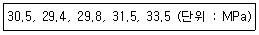
- 3.1MPa
- 4.1MPa
- 5.1MPa
- 6.1MPa
(정답률: 59%)
36. 콘크리트 비비기에 대한 설명으로 틀린 것은?
- 비비기는 미리 정해둔 비비기 시간의 3배 이상 계속하지 않아야 한다.
- 믹서 안의 콘크리트를 전부 꺼낸 후가 아니면 믹서 안에 다음 재료를 넣지 말아야 한다.
- 재료를 믹서에 투입하는 순서로서 물은 다른 재료의 투입이 끝난 후 주입하는 것을 원칙으로 한다.
- 가경식 믹서를 사용하고 비비기 시간에 대한 시험을 실시하지 않은 경우 그 최소 시간은 1분 30초 이상을 표준으로 한다.
(정답률: 67%)
37. 블리딩 시험용기의 안지름의 25cm이고, 안높이는 28.5cm이다. 이 용기에 30kg의 콘크리트를 채우고 측정한 블리딩에 따른 물의 총 용적은 200cm3 이었다면 블리딩양은?
- 0.27cm3/cm2
- 0.32cm3/cm2
- 0.41cm3/cm2
- 0.53cm3/cm2
(정답률: 48%)
38. 블리딩에 대한 설명 중 틀린 것은?
- 블리딩이 맑은 콘크리트는 침하량도 많다.
- 블리딩은 굵은 골재와 모르타르, 철근과 콘크리트의 부착력을 저하시킨다.
- 블리딩은 일종의 재료 분리이므로 블리딩이 크면 상부의 콘크리트가 다공질이 된다.
- 블리딩이 많으면, 모르타르 부분의 물-결합재비가 작게 되어 강도가 크게 된다.
(정답률: 73%)
39. 콘크리트의 휨 강도 시험에서 공시체에 하중을 가하는 속도로 옳은 것은?
- 가장자리 응력도의 증가율이 매초 0.06±0.04MPa 이 되도록 한다.
- 가장자리 응력도의 증가율이 매초 0.06±0.4MPa 이 되도록 한다.
- 가장자리 응력도의 증가율이 매초 0.6±0.04MPa 이 되도록 한다.
- 가장자리 응력도의 증가율이 매초 0.6±0.4MPa 이 되도록 한다.
(정답률: 59%)
40. 압력법에 의한 공기량 시험에서 콘크리트의 겉보기 공기량이 4.6%, 골재 수정 계수가 0.3%이면 콘크리트의 공기량은?
- 4.0%
- 4.3%
- 4.6%
- 4.9%
(정답률: 63%)
3과목: 콘크리트의 시공
41. 콘크리트 포장의 줄눈 설치 목적과 관계가 먼 것은?
- 콘크리트 포장의 건조수축균열제어
- 콘크리트 포장의 플라스틱 수축균열방지
- 콘크리트 포장의 국부적 응력균열 발생제어
- 콘크리트 포장의 표층슬래브 신축결함 보완
(정답률: 63%)
42. 아래 표와 같은 조건에서 한중 콘크리트의 타설이 종료되었을 때 온도는?
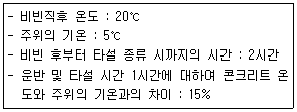
- 10.5℃
- 12.5℃
- 15.5℃
- 17.75℃
(정답률: 61%)
43. 숏크리트 시공에 대한 일반적인 설명으로 틀린 것은?
- 건식 숏크리트는 배치 후 45분 이내에 뿜어붙이기를 실시하여야 한다.
- 습식 숏크리는 배치 후 60분 이내에 뿜어붙이기를 실시하여야 한다.
- 숏크리트는 타설되는 장소의 대기 온도가 30℃ 이상이 되면 건식 및 습식 숏크리트 모두 뿜어붙이기를 할 수 없다.
- 숏크리트는 대기 온도가 10℃ 이상일 때 뿜어붙이기를 실시하며, 그 이하의 온도 일 때는 적절한 온도대책을 세운 후 실시한다.
(정답률: 73%)
44. 결랑골재 콘크리트의 배합에 대한 일반적인 설명으로 틀린 것은?
- 경량골재 콘크리트는 공기연행 콘크리트로 하는 것은 원칙으로 한다.
- 슬럼프는 일반적으로 경우 대체로 50~180mm를 표준으로 한다.
- 수밀성을 기중으로 물-결합재비를 정할 경우에는 50% 이하를 표준으로 한다.
- 경량골재 콘크리트의 공기량은 일반 골재를 사용한 콘크리트보다 2% 정도 작게 하여야 한다.
(정답률: 62%)
45. 콘크리트의 이음에 대한 일반적인 설명으로 틀린 것은?
- 시공이음은 될 수 있는 대로 전달력이 작은 위치에 설치한다.
- 신축이음은 양쪽의 구조물 혹은 부재가 완전히 구속되도록 하여야 한다.
- 바닥틀의 시공이음은 슬래브 또는 보의 경간 중간부 부근에 두어야 한다.
- 시공이음면의 거푸집 철거는 콘크리트가 굳은 후 되도록 빠른 시기에 한다.
(정답률: 67%)
46. 특정한 입도를 가지는 굵은 골재를 거푸집에 채워 넣고, 그 간극에 모르타르를 적당한 압력으로 주입하여 만드는 콘크리트의 배합에 사용되는 잔골재의 조립률의 범위로 적당한 것은?
- 1.4~2.2
- 2.3~3.1
- 2.5~3.5
- 6.0~8.0
(정답률: 68%)
47. 아래의 표에서 설명하는 양생방법은?
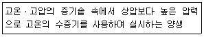
- 온수양생
- 증기양생
- 적외선 양생
- 오토클레이브 양생
(정답률: 61%)
48. 콘크리트의 운반 및 타설에 대한 설명으로 적합하지 않은 것은?
- 콘크리트의 재료분리가 될 수 있는대로 적게 일어나도록 해야 한다.
- 사전에 충분한 운반계획을 세우고, 신속하게 운반하여 즉시 타설해야 한다.
- 비비기에서 타설이 끝날 때까지의 시간은 외기온도가 25℃ 이상일 때는 2시간 이내로 하여야 한다.
- 넓은 장소에서는 일반적으로 콘크리트의 공급원으로부터 먼 쪽에서 타설하여 가까운 쪽으로 끝내도록 하는 것은 좋다.
(정답률: 76%)
49. 일반 수중 콘크리트의 배합에서 단위 결합재비량은 표준으로 옳은 것은?
- 300kg/m3 이하
- 350kg/3 이상
- 360kg/3 이하
- 370kg/3 이상
(정답률: 46%)
50. 터널 등의 숏크리트에 첨가하여 뿜어붙이는 콘크리트의 응결 및 조기의 강도를 증진시키기 위해 사용되는 혼화제는?
- 감수제
- 급결제
- 지연제
- AE제
(정답률: 81%)
51. 팽창 콘크리트의 품질과 관련하여 틀린 것은?
- 팽창 콘크리트의 강도는 일반적으로 재령 28일의 압축강도를 기준으로 한다.
- 콘크리트의 팽창률은 일반적으로 재령 28일에 대한 시험값을 기준으로 한다.
- 수축보상용 콘크리트의 팽창률은 150×10-6 이상, 250×10-6 이하인 값은 표준으로 한다.
- 화학적 프리스트레스용 콘크리트의 팽창률은 200×10-6 이상, 700×10-6 이하인 값은 표준으로 한다.
(정답률: 49%)
52. 콘크리트의 압축강도 시험을 통하여 거푸집을 해체하고자 한다. 설계기준압축 강도가 24MPa, 단층구조의 보의 밑면인 경우 거푸집을 해체할 때 콘크리트 압축강도는 얼마 이상이어야 하는가?
- 5MPa
- 8MPa
- 12MPa
- 16MPa
(정답률: 67%)
53. 한중 콘크리트의 시공에 대한 아래 표의 설명에서 ()안에 들어갈 알맞은 숫자는?
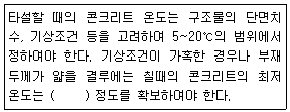
- 5℃
- 10℃
- 15℃
- 20℃
(정답률: 54%)
54. 콘크리트가 굳지 않은 상태일 때 콘크리트 표면의 수분 증발속도가 블리딩(bleeding) 수의 상승속도를 상회하는 경우에 표면 부근이 급격하게 건조되면서 발생하는 균열을 무엇이라고 하는가?
- 건조수축균열
- 수화수축균열
- 소성수축균열
- 자기수축균열
(정답률: 70%)
55. 고강도 콘크리트에 대한 설명으로 틀린 것은?
- 고강도 콘크리트를 시공할 때 거푸집판이 건조할 우려가 있는 경우라도 절대 살수하여서는 안 된다.
- 고강도 콘크리트의 설계기준압축강도는 일반적으로 40MPa 이상으로 하며, 고강도 경량골재 콘크리트는 27MPa 이상으로 한다.
- 기상의 변화가 심하거나 동결융해에 대한 대책이 필요한 경우를 제외하고는 공기 연행제를 사용하지 않는 것을 원칙으로 한다.
- 운반시간 및 거리가 긴 경우에 사용하는 운반차는 트럭믹서, 트럭 애지테이터 혹은 건비빔 믹서로 하여야 하며, 고성능 감수제 등을 추가로 투여하는 등의 조치를 하여야 한다.
(정답률: 74%)
56. 프리스트레스트 콘크리트에서 프리스트레싱할 때 프리텐션 방식 콘크리트의 압축강도는?
- 15MPa 이상
- 20MPa 이상
- 25MPa 이상
- 30MPa 이상
(정답률: 53%)
57. 서중 콘크리트에 대한 일반적인 설명으로 틀린 것은?
- 서중 콘크리트의 배합온도는 낮게 관리하여야 한다.
- 콘크리트를 타설할 때의 콘크리트 온도는 50℃ 이하이어야 한다.
- 하루 평균기온이 25℃를 초과하는 것이 예상되는 경우 서중 콘크리트로 시공하여야 한다.
- 콘크리트를 타설하기 전에는 지반, 거푸집 등 콘크리트로부터 물을 흡수할 우려가 있는 부분을 습윤상태로 유지하여야 한다.
(정답률: 68%)
58. 유동화 콘크리트에서 베이스 콘크리트의 정의를 가장 잘 설명한 것은?
- 수밀성이 큰 콘크리트 또는 투수성이 적은 콘크리트
- 미리 비빈 콘크리트에 유동화제를 첨가하여 유동성을 증대시킨 콘크리트
- 유동화 콘크리트를 제조할 때 유동화제를 첨가하기 전의 기본 배합의 콘크리트
- 굳지 않은 상태에서 재료 분리 없이 높은 유동성을 가지면서 다짐작업 없이 자기 충전성이 가능한 콘크리트
(정답률: 71%)
59. 콘크리트의 시공에서 슈트를 사용할 경우에 대한 설명으로 틀린 것은?
- 슈트를 사용하는 경우에는 원칙적으로 경사슈트를 사용하여야 한다.
- 경사슈트의 토출구에서 조절판 및 깔때기를 설치해서 재료 분리를 방지하여야 한다.
- 경사슈트를 사용할 경우 일반적으로 경사는 수평 2에 대하여 연직 1정도가 적당하다.
- 연직슈트는 깔때기 등을 이어대서 만들어 콘크리트의 재료 분리가 적게 일어나도록 하여야 한다.
(정답률: 53%)
60. 방사선 차폐용 콘크리트에 대한 일반적인 설명으로 틀린 것은?
- 물-결합재비는 50% 이하를 원칙으로 한다.
- 주로 생물체의 방호를 위하여 X선, γ선 및 중심자선을 차폐할 목적으로 사용된다.
- 차폐용 콘크리트로서 필요한 성능인 밀도, 압축강도, 설계허용 온도, 결합수량, 붕소량 등을 확보하여야 한다.
- 콘크리트의 슬럼프는 작업에 알맞은 범위내에서 가능한 작은 값이어야 하며, 일반적인 경우 40mm 이하로 하여야 한다.
(정답률: 61%)
4과목: 콘크리트 구조 및 유지관리
61. 콘크리트 구조물의 보강공법이 아닌 것은?
- 충전공법
- 강판접착공법
- 단면 증설공법
- 탄소섬유시트 접착공법
(정답률: 54%)
62. 콘크리트 압축강도 추정을 위한 반발경도 시험(KS F 2730)에 대한 설명으로 옳은 것은?
- 시험 영역의 지름은 150mm 이상이 되어야 한다.
- 도장이 되어 있는 평활한 면은 그대로 시험할 수 있다.
- 시험할 콘크리트 부재는 두께가 50mm 이상이어야 한다.
- 각 측정치마다 슈미트헤머에 의한 측정점은 10점을 표준으로 한다.
(정답률: 57%)
63. 콘크리트의 탄산화에 관한 설명으로 틀린 것은?
- 탄산화 깊이는 경과시간에 반비례한다.
- 공기 중의 탄산가스 농도가 높을수록 탄산화 속도가 빨라진다.
- 콘크리트의 물-결합재비가 낮으면 탄산화 속도가 느려진다.
- 탄산화 깊이가 철근 위치에 도달하면 철근 피복의 박리가 일어난다.
(정답률: 72%)
64. 옹벽의 안정조건에 대한 아래 설명에서 ()안에 적합한 수치는?
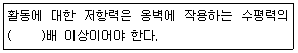
- 1
- 1.5
- 2
- 2.5
(정답률: 59%)
65. 포스트텐션 공법에 의한 PS 콘크리트 부재의 제작과정의 순서로 옳은 것은?
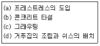
- (d)-(b)-(a)-(c)
- (d)-(a)-(b)-(c)
- (d)-(b)-(c)-(a)
- (d)-(a)-(c)-(b)
(정답률: 53%)
66. 강도설계법에서 띠철근 기중의 강도가 인장으로 지배되는 경우로 옳은 것은? (단, 단주이며, e:편심거리, eb:균형편심, Pu:편심축강도, Pb:균형축강도이다.)
- e＜eb', P＜Pb인 경우
- e＜eb', P＞Pb인 경우
- e＞eb', P＜Pb인 경우
- e＞eb', P＞Pb인 경우
(정답률: 48%)
67. 철근의 단면적 As=3000mm2, fck=30MPa, fy=400MPa인 단철근 직사각형 보의 전압출력(C)은? (단, 과소철근보이다.)
- 400kN
- 900kN
- 1200kN
- 12000kN
(정답률: 50%)
68. 압축부재의 축방향 철근의 D35 이상일 때 사용할 수 있는 띠철근의 규정으로 옳은 것은?
- D10 이상의 띠철근으로 둘러싸야 한다.
- D13 이상의 띠철근으로 둘러싸야 한다.
- D15 이상의 띠철근으로 둘러싸야 한다.
- D16 이상의 띠철근으로 둘러싸야 한다.
(정답률: 63%)
69. 아래에서 설명하는 균열의 보수기법은?
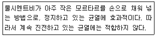
- 짜깁기법
- 드라이 패킹
- 폴리머 침투
- 에폭시주입법
(정답률: 42%)
70. 콘크리트 구조물의 외관조사 중 육안조사에 의한 조사항목에 속하지 않는 것은?
- 균열
- 침하
- 철근노출
- 부재의 응력
(정답률: 79%)
71. 구조물의 보수공법 중 주입공법의 특징으로 틀린 것은?
- 미관의 유지가 용이하다.
- 내력 복원의 안전성을 기대할 수 있다.
- 내구성 저하방지 및 누수방지를 기대할 수 있다.
- 소요의 접착강도가 발현되기 위해 장기간이 소요된다.
(정답률: 64%)
72. 콘크리트 구조물의 외관조사 시 외관조사망도에 기입하지 않는 것은?
- 균열 폭
- 균열 길이
- 균열 깊이
- 균열 형태
(정답률: 63%)
73. 그림과 같은 T형 보에서 빗금 친 부분의 압축강도와 같은 크기의 힘을 발휘하는 인정철근의 단면적(Asf)은? (단, fck=18MPa, fy=300MPa이다.)
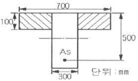
- 1530mm2
- 2040mm2
- 3570mm2
- 4335mm2
(정답률: 41%)
74. 350kNㆍm의 계수휨모멘트(Mu)가 작용하는 단철근 직사각형 보의 유효깊이 d는? (단, 철근비 ρ=0.0135, b=200mm, fck=24MPa, fy=300MPa, ø=0.85이다.)
- 701.4mm
- 751.4mm
- 801.4mm
- 851.4mm
(정답률: 30%)
75. 도로교 상부 구조의 충격계수(i)식으로 옳은 것은? (단, L은 지간이며, ⅰ는 0.3을 초과할 수 없다.)
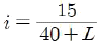
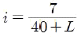
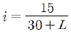
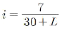
(정답률: 50%)
76. 아래의 표에서 설명하는 동해의 형태는?
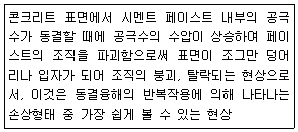
- Spalling
- Pop-out
- Scaling
- Cracking
(정답률: 54%)
77. 굳지 않은 콘크리트 상태에서 총량을 규제를 하고 있는 전 염소이온량의 한도로 옳은 것은?
- 0.03kg/m3 이하
- 0.04kg/m3 이하
- 0.10kg/m3 이하
- 0.30kg/m3 이하
(정답률: 50%)
78. 조건에 따른 강도감소계수 ø의 값으로 틀린 것은?
- 인장지배단면:0.85
- 포스트텐션 정착구역:0.85
- 무근콘크리트의 휨모멘트:0.55
- 압축지배단면으로서 띠철근으로 보강된 철근콘크리트 부재:0.70
(정답률: 63%)
79. 강도설계법에 따른 프리스트레스를 가하지 않은 나선철근 압축부재 설계 시 설계축강도(øPn)는? (단, 기둥의 총 단면적 Ag=300000mm2, Ast=6-D35=5700mm2, fck=21MPa, fy=300MPa)
- 3758kN
- 4⑤7kN
- 4143kN
- 4439kN
(정답률: 30%)
80. 콘크리트를 타설하고 다짐하여 마감작업을 한 이후에도 콘크리트는 계속하여 압밀되는 경향이 있다. 이러한 현상으로 발생하는 균열을 침하균열이라고 한다. 다음 중 침하균열이 증가되는 경우가 아닌 것은?
- 철근 직경이 클수록 침하균열은 증가한다.
- 충분한 다짐을 못한 경우 침하균열은 증가한다.
- 콘크리트의 슬럼프가 작을수록 침하균열은 증가한다.
- 누수되는 거푸집을 사용한 경우 침하균열은 증가한다.
(정답률: 61%)